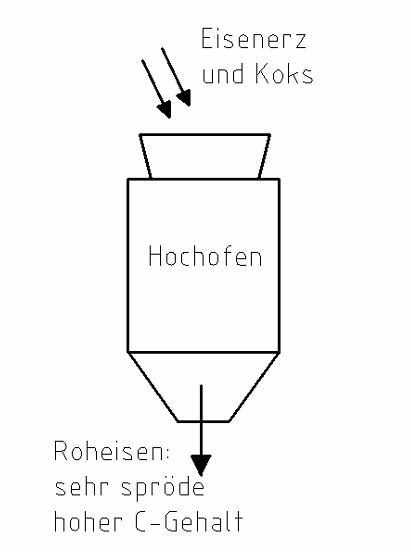
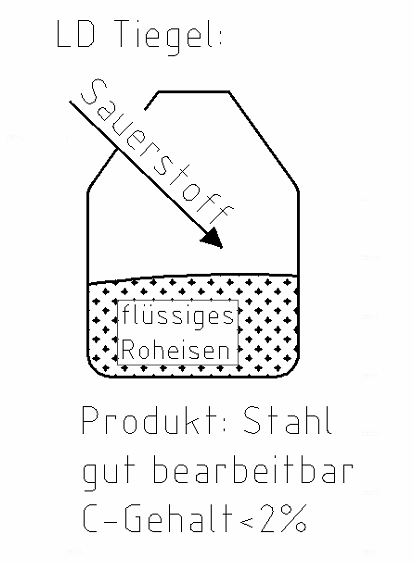
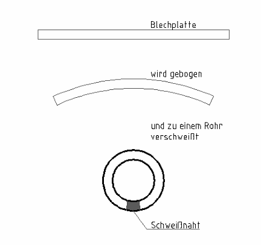
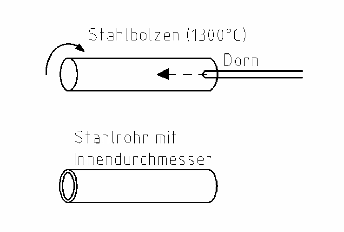

1 Stahl
Tippe die richtige Antwort an. Dann tippe auf „Prüfen“.
Stahl ist ein wichtiger Werkstoff für Rohre. Du findest ihn bei fast jeder Heizung.
So entsteht Stahl

- Eisenerz und Koks kommen schichtweise in den Hochofen.
- Bei hoher Temperatur entsteht das Roheisen.
- Im Roheisen ist noch sehr viel Kohlenstoff (vom Koks).
- Darum ist das Roheisen spröde. Man kann es nicht bearbeiten.
Eisenerz = Gestein mit Eisen drin. Koks = wird aus Kohle gemacht und brennt sehr heiß.
Spröde = bricht leicht, wie Glas.

- Das flüssige Roheisen kommt in einen LD-Tiegel.
- Dort wird Sauerstoff auf das Roheisen geblasen.
- Der Kohlenstoff verbrennt. Es wird immer weniger.
- Ist weniger als 2 % Kohlenstoff drin, heißt es Stahl.
LD heißt Linz-Donawitz. Dieses Verfahren wurde in Österreich erfunden.
Rohstoffe: Eisenerz, Koks, Stahlschrott
Vorteile: hohe Festigkeit (sehr stabil), wiederverwertbar
Nachteile: hohes Gewicht, Rost (Korrosion)
Aufgabe 1
Vorteil oder Nachteil von Stahl?
a) hohe Festigkeit
b) hohes Gewicht
c) wiederverwertbar
d) Rost (Korrosion)
Aufgabe 2
Lückentext Stahlherstellung. Tippe das Wort für ____ an.
1. Die wichtigsten Rohstoffe sind Eisenerz und ____.
2. Sie werden schichtweise in den ____ gefüllt.
3. Dort entsteht unter hoher Hitze das Roheisen. Dieses ist sehr ____.
4. Beim LD-Verfahren wird Sauerstoff auf das ____ Roheisen geblasen.
5. Ist der Kohlenstoffgehalt ____, spricht man von Stahl.
6. Ein Vorteil von Stahl ist die hohe ____.
7. Nachteile sind das hohe ____ und die Korrosion (= Rost).
Stahlrohre
Geschweißte Stahlrohre:
Eine Blechplatte wird gebogen. Dann wird sie zu einem runden Rohr verschweißt.

Nahtlose Stahlrohre:
Ein runder Stahlblock wird auf über 1000 °C erwärmt. Er wird gedreht. Gleichzeitig wird ein Dorn (eine Stange) hineingetrieben. So entsteht das Loch.

Nahtlose Rohre sind sehr hochwertig. Sie halten hohe Belastungen aus.
Welcher Stahl wofür?
Geschlossener Kreislauf = immer dasselbe Wasser fließt im Kreis, z. B. Heizung.
Offener Kreislauf = frisches Wasser kommt nach, das verbrauchte fließt weg, z. B. Trinkwasser.
- Unlegierter Stahl (C-Stahl): für geschlossene Kreisläufe, z. B. Heizung.
Er kann auch verzinkt sein (für Brunnenanlagen) oder eine Kunststoffhülle haben. - Edelstahl: für offene Kreisläufe, z. B. Trinkwasser. Er rostet nicht.
Verzinkt = mit einer Schicht aus Zink überzogen. Das schützt vor Rost.
Aufgabe 3
Lückentext Stahlrohre. Tippe das Wort für ____ an.
1. Stahlrohre gibt es nahtlos und ____.
2. Für nahtlose Rohre wird ein runder Stahlblock auf ____ erwärmt.
3. Dann wird ein ____ in das volle Material hineingetrieben.
4. Unlegierter Stahl wird für geschlossene Kreisläufe verwendet, z. B. für die ____.
5. Für das Trinkwasser nimmt man oft ____, weil sie nicht rosten.